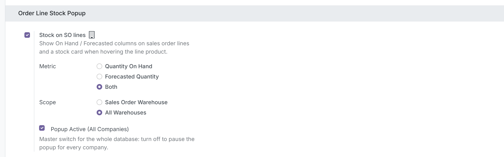
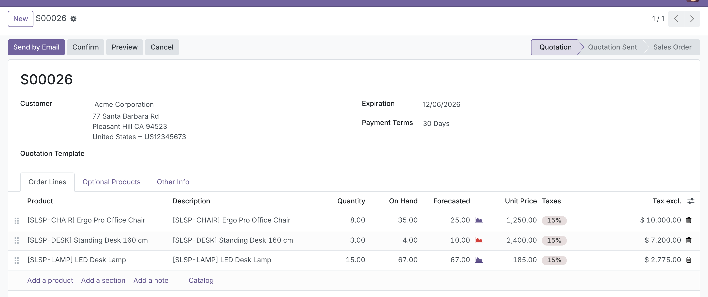
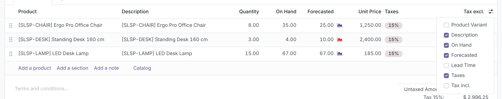
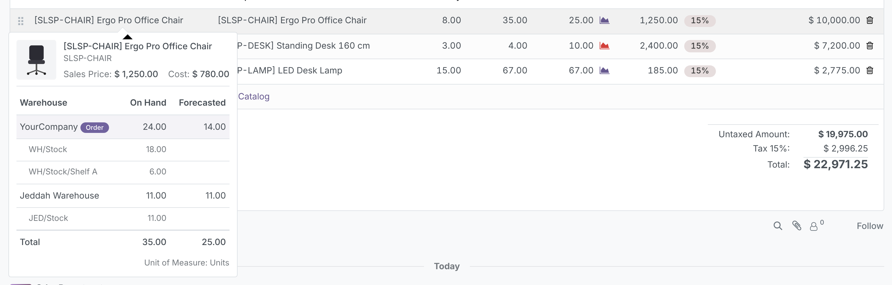
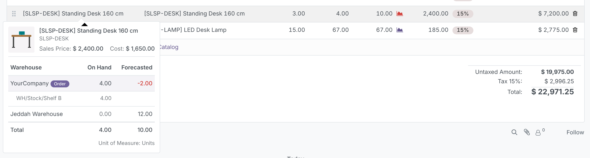
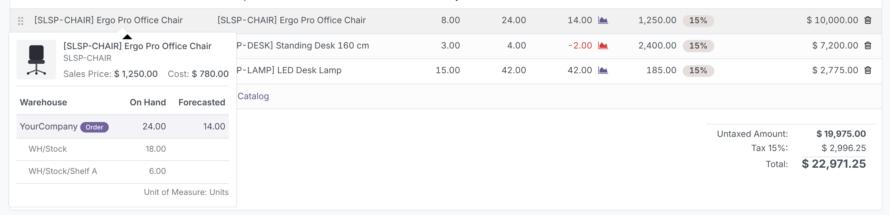
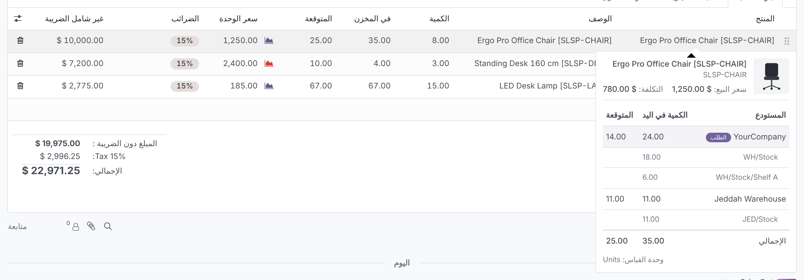

See On Hand and Forecasted stock right in the order lines, and hover any product for a card with its image, sales price, cost and a breakdown per warehouse and location. Your salespeople quote what you can actually deliver, without leaving the quotation.
Salespeople need one answer while they type a quotation: can we deliver this, and from where?
Four steps, nothing to set up on products or warehouses.
Screenshots use the module’s demo data: two warehouses (the company’s main warehouse YourCompany, code WH, and Jeddah Warehouse, code JED), shelves A and B, three furniture products, a confirmed order taking stock out and a receipt bringing desks into Jeddah.
Go to Sales › Configuration › Settings › Order Line Stock Popup. Tick Stock on SO lines, then choose the Metric (Quantity On Hand, Forecasted Quantity or Both) and the Scope (Sales Order Warehouse or All Warehouses). Popup Active (All Companies) is a database-wide master switch that pauses the feature everywhere without losing each company’s choices.

The On Hand and Forecasted columns appear next to Quantity, in the product’s unit of measure. With Metric set to Both you get the two columns; with Quantity On Hand or Forecasted Quantity you get only that one. Negative figures turn red. Each user can hide or show the columns from the optional columns menu at the end of the header, and Odoo remembers that choice.


Rest the mouse on the product of any line, in a draft quotation or a confirmed order. The card shows the product image, internal reference, Sales Price and Cost, then one row per warehouse with On Hand and Forecasted. The order’s warehouse is listed first and tagged Order; the internal locations holding the product are listed under each warehouse, with a Total at the bottom.

| Ergo Pro Office Chair (demo) | On Hand | Forecasted |
|---|---|---|
| YourCompany (WH/Stock 18 + WH/Stock/Shelf A 6, 10 on a confirmed order) | 24.00 | 14.00 |
| Jeddah Warehouse | 11.00 | 11.00 |
| Total | 35.00 | 25.00 |
The forecast counts confirmed incoming and outgoing moves, the same way Odoo computes Forecasted Quantity. A move from one warehouse to another counts as out of the first and into the second; moves inside one warehouse are ignored. Below, the desk is over-sold in YourCompany (red) while a receipt of 12 is on its way to Jeddah Warehouse.

With Scope set to Sales Order Warehouse, the columns and the card show only the warehouse selected on the order. Change the Warehouse in the Other Info tab and both update at once, before you save.

Every label, setting and column is translated into Arabic (ar_001), and the card mirrors correctly in right-to-left layouts.

Each of these is covered by the automated tests.
No new groups. What each user sees follows the standard Sales groups.
| Who | Sees |
|---|---|
| Sales / User | Stock columns and the card with image and Sales Price; no Inventory rights needed. Cost is hidden. |
| Sales / Administrator | Everything above plus the product Cost, and the settings block. |
| Multi-company | Only warehouses of the order’s company, and only for companies the user is allowed in. |
| Odoo version | 17.0, Community and Enterprise |
| Depends on | sale_stock |
| Python dependency | None |
| Menus | None added; works on Sales › Orders › Quotations and Orders |
| Settings | Sales › Configuration › Settings › Order Line Stock Popup |
| Models | Extends res.company, res.config.settings, product.product, sale.order, sale.order.line (non-stored computed columns, no database bloat) |
| Front end | OWL field widget extending the standard order-line product field; asynchronous, cached popover |
| Automated tests | 21: 20 unit tests (figures vs. standard Odoo, scope, header changes, metric, master switch, locations, rounding, multi-company, access rights, query count, line columns) and 1 browser tour (columns and hover card) |
| Languages | English, Arabic (ar_001) |
| License | LGPL-3 |
Questions, a demo, or an adaptation to your own process? Get in touch.
✉ ibrahim.yahiah@gmail.com LinkedIn: Ibrahim YahiaAuthor: Ibrahim Yahia · License: LGPL-3